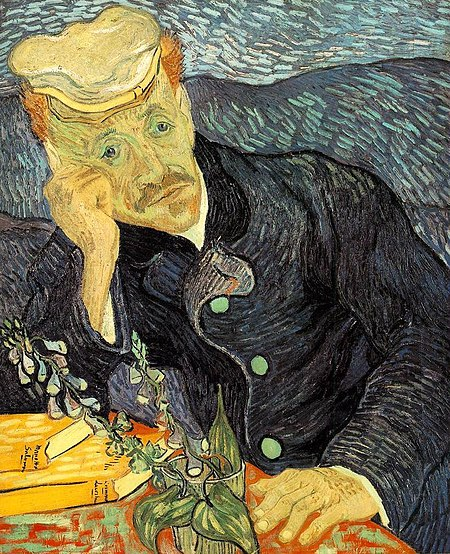
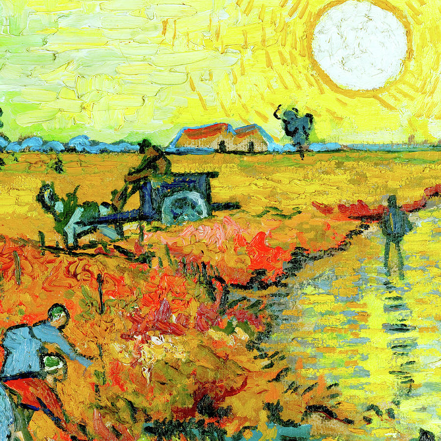

THE RED VINEYARD
The Red Vineyard at Arles, which Vincent van Gogh was unusually pleased with, is the only work he sold during his lifetime, and was bought for 400 francs by Anna Boch (1848-1936).

The story of The RED VINEYARD :
This painting is also referred to as The Red Vineyard at Arles. Van Gogh created it in a single day on November 5, 1888. He painted this work about two weeks after Paul Gauguin joined him in Arles. The colorful works of Gauguin inspired Van Gogh to also use more colors for this painting, and he continued to do that in his later works.
Van Gogh created this painting from his memory, the day after an evening walk through the vineyards near Arles. Van Gogh liked to work from memory rather than by directly painting from observation as painting from memory gives paintings a more artistic look. The only painting that Gauguin completed during his two-month stay in Arles was The Painter of Sunflowers (Portrait of Vincent van Gogh) which is in the Van Gogh Museum in Amsterdam.
In September 1888, Van Gogh also created another painting of the vineyards, called The Green Vineyard. This painting is on display in the Kröller-Müller Museum in The Netherlands.
The Green Vineyard:
Symbolism: The main message of this painting is that the people living at the end of the 19th century had to work long days. The workers in this painting are still doing manual labor during sunset at the end of the day. Van Gogh also liked the field workers as they were in sync with nature.
Other pictures of The Red Vineyard:


”Whoever loves much, performs much, and can accomplish much, and what is done in love is done well.”
By Vincent Van Gogh